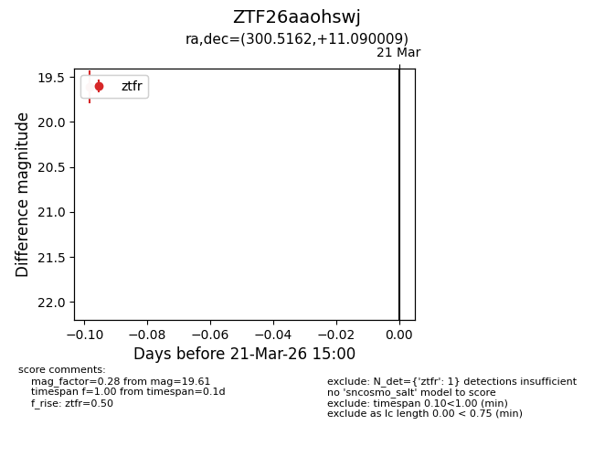
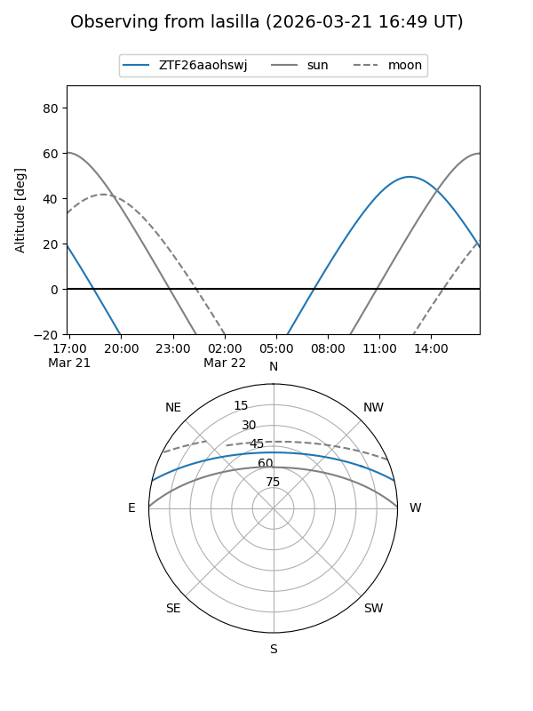
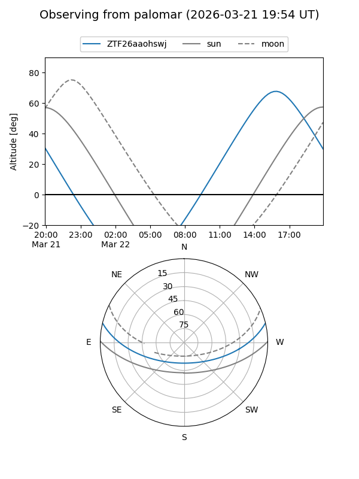

ZTF26aaohswj
Target ZTF26aaohswj at 2026-03-21 15:02
Aliases and brokers:
FINK: link
Lasair: link
ALeRCE: link
alt names
ZTF26aaohswj (ztf,fink_ztf)
Coordinates:
equatorial (ra, dec) = 300.5162,+11.09001
equatorial (HMS+DMS) = 20:02:03.89,+11:05:24.03
galactic (l, b) = (51.1026,-10.20645)
Flags:
Photometry:
last ztfr=19.61
1 ztfr detections
Lightcurve

Visibility


Additional plots